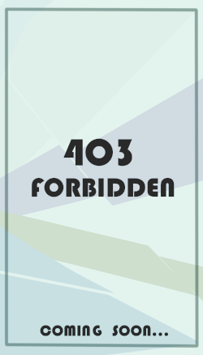
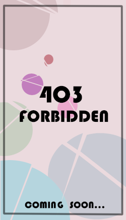

<!DOCTYPE html>
<html lang="en" class="demo-2 no-js">
<head>
<meta charset="UTF-8" />
<meta http-equiv="X-UA-Compatible" content="IE=edge"> 


<style>
    .message {
        position: fixed;
        width: 80%;
        text-align: center;
        top: 50%;
        left: 50%;
        -webkit-transform: translateX(-50%) translateY(-50%);
                transform: translateX(-50%) translateY(-50%);
        font-size: 1.2rem;
        font-family: 'Baloo Bhaina', cursive;
        color: #706C61;
    }
    a{
        text-decoration: none;
        font-weight: bolder;
        color: rgb(65, 65, 65);
    }
    </style>
    </head>
    <body>
    
    <script src="click/mo.min.js"></script>
    <script src="click/mojs-player.min.js"></script>
    
    <script>
    'use strict';
    
    var _extends = Object.assign || function (target) { for (var i = 1; i < arguments.length; i++) {if (window.CP.shouldStopExecution(2)){break;} var source = arguments[i]; for (var key in source) {if (window.CP.shouldStopExecution(1)){break;} if (Object.prototype.hasOwnProperty.call(source, key)) { target[key] = source[key]; } }
    window.CP.exitedLoop(1);
     }
    window.CP.exitedLoop(2);
     return target; };
    
    var OPTS = {
        fill: 'none',
        radius: 25,
        strokeWidth: { 50: 0 },
        scale: { 0: 1 },
        angle: { 'rand(-35, -70)': 0 },
        duration: 500,
        left: 0,
        top: 0,
        easing: 'cubic.out'
    };
    
    var circle1 = new mojs.Shape(_extends({}, OPTS, {
        stroke: '#6495ED'
    }));
    
    var circle2 = new mojs.Shape(_extends({}, OPTS, {
        radius: { 0: 15 },
        strokeWidth: { 30: 0 },
        stroke: '#7B68EE',
        delay: 'rand(75, 150)'
    }));
    
    document.addEventListener('click', function (e) {
        circle1.tune({ x: e.pageX, y: e.pageY }).replay();
    
        circle2.tune({ x: e.pageX, y: e.pageY }).replay();
    });</script>
    </body>
    <body oncontextmenu=self.event.returnValue=false onselectstart="return false"><!--←禁止左右键-->
    <script>
        //按键触发
    document.onkeydown = function(){
        //禁止ctrl+u↓
        if (event.ctrlKey && window.event.keyCode==85){
        return false;
        }
        //禁止 F12↓
        if (window.event && window.event.keyCode == 123) {
        event.keyCode = 0;
        event.returnValue = false;
        }
        //禁止ctrl+s↓
        if (event.ctrlKey && window.event.keyCode==83){
        return false;
        }
        //禁止 F5 ↓
        if (window.event && window.event.keyCode == 116) {
        event.keyCode = 0;
        event.returnValue = false;}
        };
    </script>

<meta name="viewport" content="width=device-width, initial-scale=1"> 
<title>私人碎片展览馆-OC区-未知</title>

<link rel="stylesheet" type="text/css" href="css/normalize.css" />
<link rel="stylesheet" type="text/css" href="css/demo.css" />

<!--必要样式-->
<link rel="stylesheet" type="text/css" href="css/component.css" />
<script src="js/snap.svg-min.js"></script>
<!--[if IE]>
<script src="http://html5shiv.googlecode.com/svn/trunk/html5.js"></script>
<![endif]-->

</head>
<body>

<div class="container">

	<p style="text-align: right;color: azure;"><b><a href="https://aelier.github.io/rOmantiC/">|返回首页</a>&emsp;&emsp;&emsp;<a href="https://aelier.github.io/rOmantiC/OC_WORLD/OC_MainWorld/OC_MainWorld_view">|世界观</a>&emsp;&emsp;</b></p>
	<hr>
	<header class="codrops-header">
		<h1>List of Original Characters<br>
			<span><ruby>驚くくらい たくさんの色と<br>たくさんの音に 溢れる世界<rt>在这个欢唱着奇彩妙声的世界！</rt></ruby></span>
		</h1>
		<nav class="codrops-demos">
			<a href="ALL.html">&ensp;总&emsp;览&ensp;</a>
			<a href="LAND.html">&ensp;陆&emsp;地&ensp;</a>
			<a href="OCEAN.html">&ensp;海&emsp;洋&ensp;</a>
			<a  class="current-demo" href="UNKOWN.html">&ensp;未&emsp;知&ensp;</a>
		</nav>
	</header>
	
	<section id="grid" class="grid clearfix">
		<a href="javascript:void(0)" data-path-hover="m 180,34.57627 -180,0 L 0,0 180,0 z">
			<figure>
				
				<svg viewBox="0 0 180 320" preserveAspectRatio="none"><path d="M 180,160 0,218 0,0 180,0 z"/></svg>
				<figcaption>
					<h2>D*r*3&y</h2>
					<p>？？？？？<br>？？？？？</p>
					<button><span title="在做了！（巨大声">LOADING...</span></button>
				</figcaption>
			</figure>
		</a>
		<a href="javascript:void(0)" data-path-hover="m 180,34.57627 -180,0 L 0,0 180,0 z">
			<figure>
				
				<svg viewBox="0 0 180 320" preserveAspectRatio="none"><path d="M 180,160 0,218 0,0 180,0 z"/></svg>
				<figcaption>
					<h2>？？？</h2>
					<p>？？？？？<br>？？？？？</p>
					<button><span title="在做了……（小声">LOADING...?</span></button>
				</figcaption>
			</figure>
		</a>
		<a href="javascript:void(0)" data-path-hover="m 180,34.57627 -180,0 L 0,0 180,0 z">
			<figure>
				
				<svg viewBox="0 0 180 320" preserveAspectRatio="none"><path d="M 180,160 0,218 0,0 180,0 z"/></svg>
				<figcaption>
					<h2>耐心等待!</h2>
					<p>我们完全有理由相信未来我们可以了解更多角色。</p>
					<button><span title="咕咕咕！">COMEING SOON!</span></button>
				</figcaption>
			</figure>
		</a>

	</section>

</div><!-- /container -->

<script type="text/javascript">
(function() {

	function init() {
		var speed = 250,
			easing = mina.easeinout;

		[].slice.call ( document.querySelectorAll( '#grid > a' ) ).forEach( function( el ) {
			var s = Snap( el.querySelector( 'svg' ) ), path = s.select( 'path' ),
				pathConfig = {
					from : path.attr( 'd' ),
					to : el.getAttribute( 'data-path-hover' )
				};

			el.addEventListener( 'mouseenter', function() {
				path.animate( { 'path' : pathConfig.to }, speed, easing );
			} );

			el.addEventListener( 'mouseleave', function() {
				path.animate( { 'path' : pathConfig.from }, speed, easing );
			} );
		} );
	}

	init();

})();
</script>

</body>
</html>